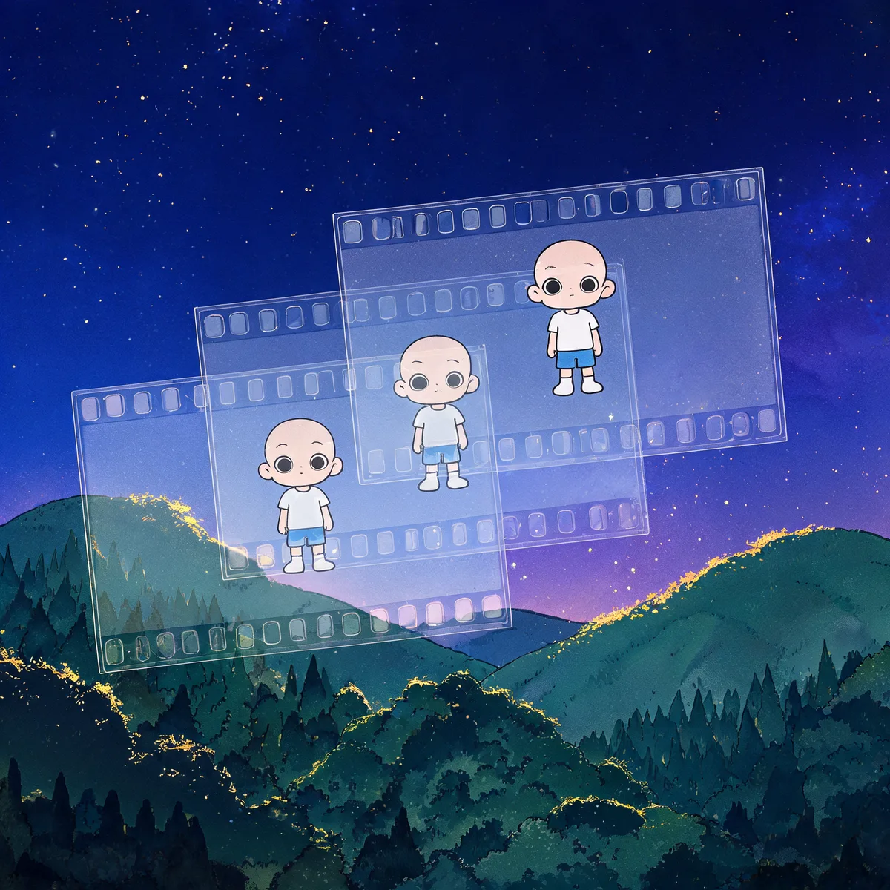

在赛璐珞出现之前，动画的每一帧都要把背景连角色一起整幅重画。1914 年 Earl Hurd 发明了分层：背景只画一次，角色画在透明胶片上叠加。动画从此能像流水线一样大规模生产。

下面是循环播放的动画。试着关掉图层、切换模式，看看「背景只画一次」和「整帧重画」到底差在哪。
赛璐珞：背景/前景只画一次，本帧只重画角色。
拖滑块调整这部「动画片」的时长、帧率和图层数，看看两种方式要手绘多少张画面。
一项 1914 年专利的技术，如何让动画电影从「不敢想」变成「能赚钱」。
赛璐珞是透明塑料，角色画在赛璐珞上，背景画在纸上。拍摄时把胶片叠在背景上逐格拍。要动的地方只动角色，静止的背景永远不用重画。
图层让制作能分工：有人专门画背景，有人专门画角色，有人专门上色。动画从「一个人画几千张」变成「一条专业流水线」，成本大幅下降。
赛璐珞不是迪士尼发明的，但迪士尼用到了极致。一部动画长片需要超过 10 万张手绘赛璐珞，正是分层技术让《白雪公主》这样的长片成为可能。